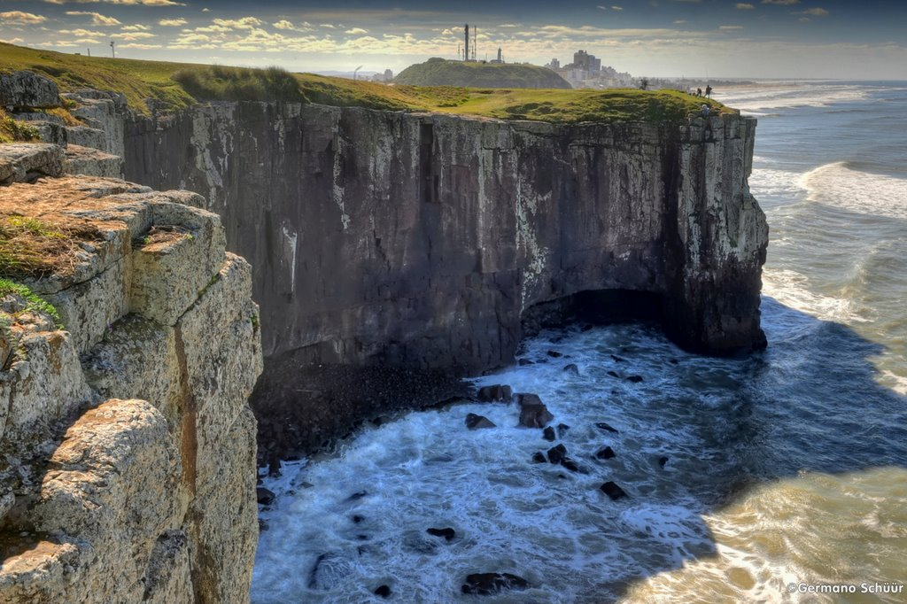

Para as famílias, brinquedos e passeios de trenzinho e pedalinho fazem a alegria da criançada. Além disso, você pode visitar o orquidário e os diversos monumentos históricos. Rica em áreas verdes, POA proporciona outros ótimos parques a serem visitados, como o Moinhos de Vento (Parcão) e o Parque Marinha do Brasil.
Região Sul

Rio Grande do Sul - RS
Porto Alegre
Gramado
A cidade é conhecida por suas belezas naturais, que remete a um pedacinho da Europa no Brasil. Com sua gastronomia diversificada, pontos turísticos encantadores e lojas de chocolates. Um verdadeiro passeio para casais românticos, grupos de amigos e familiares.
Torres
O que tem de único e singular no litoral de Torres são as suas praias – principalmente a da Guarita e a Prainha. De brinde, formações de falésias sem igual no Brasil, bons museus, visita aos lobos-marinhos na Ilha dos Lobos e o principal festival de balonismo da América do Sul.

Canela
Canela é famosa pelos seus parques naturais e temáticos, pelo clima serrano e tradições europeias, espetáculos de música, dança, teatro e o espetáculo temático do Sonho de Natal. Juntas, a dupla Canela Gramado forma um dos principais destinos turísticos brasileiros, na Serra Gaúcha. Por lá, há atrações que agradam tanto as crianças quanto os adultos, como o Mini Mundo, por exemplo. Isso sem falar que mesmo nas atrações mais infantis, como a Aldeia do Papai Noel
Bento Gonçalves
Não é à toa que Bento Gonçalves é uma das cidades mais procuradas quando o assunto é turismo. Além do Vale dos Vinhedos, a região também oferece passeios turísticos, um roteiro por construções históricas, vales e parques. Pode se preparar, pois não faltarão pontos turísticos em Bento Gonçalves para conhecer.
Santa Catarina - SC
Florianópolis
Diversidade de programas para toda a família. Quem pensa que Florianópolis atrai somente pelas suas praias se engana. A ilha permite outros programas que podem ser tão interessantes quanto, como por exemplo sua diversidade de trilhas que adentra suas áreas de preservação e lindas praças e parques que existem na cidade.
São Francisco Do Sul
Centro Histórico de São Francisco do Sul Reúne um conjunto de 150 prédios históricos, formando um belo cenário onde se destacam grandes casarões bem conservados, A Igreja Matriz, o Museu do Mar, entre outros… Uma das melhores vistas do centro histórico se dá a partir do mar, chegando e saindo de um passeio de barco.
Barra Velha
As atividades econômicas que mais se destacam em Barra Velha, são o turismo e a pesca. O município de Barra Velha oferece uma orla com 16 km de belas praias, que vai da divisa com Piçarras até a Barra do Rio Itapocu. Além das praias, oferece outras atrações como o Mirante do Cristo e a Lagoa de Barra Velha.

Itajaí
Itajaí está entre as principais e melhores cidades de Santa Catarina para se viver. A razão disso é a infraestrutura completa, boa mobilidade urbana, maior contato com a natureza e segurança, bem como a economia próspera.
Balneário Camboriú
Aqui não há estrutura de barracas e o mar é bastante calmo, sendo muito atrativo para quem viaja com crianças e idosos. Linda Praia de Taquarinhas, em Balneário Camboriú, SC. Para quem gosta de pesca de arremesso, a Praia de Taquarinhas é um dos pontos mais favoráveis para a prática em toda a cidade de Balneário
Paraná - PR
Curitiba
Não só pelas suas opções turísticas, mas também pelo seus parques e bosques verdejantes, clima agradável, organização e ótima infraestrutura. Considerada como uma das cidades mais ecológicas do país, ela garante experiências inesquecíveis e sabe como ninguém receber os seus visitantes
Foz do Iguaçu
Abrigando uma importante reserva natural e uma das mais belas atrações naturais do mundo, as Cataratas do Iguaçu, a cidade de Foz do Iguaçu, no Paraná, é o destino certo para quem procura por dias tranquilos em meio à natureza
Ponta Grossa
Tem cachoeiras, parques, espaços verdes incríveis para acampar, bons restaurantes e hotéis, além de um povo muito simpático. Como não ficar encantado? Se Ponta Grossa ainda não entrou na sua lista de locais para conhecer, prepare o coração para essa lista.

Lapa
O principal atrativo de Lapa é mesmo seu conjunto arquitetônico repleto de casarios históricos. Entre eles existem museus e monumentos que se destacam. No alto do morro, a atração é a gruta do Monge.
Ilha do Mel
Composta por belas montanhas, praias e monumentos históricos, a Ilha do Mel forma um cenário paradisíaco e proporciona uma experiência única para os amantes da natureza e esportes de aventura.